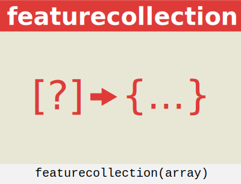

Methods
(inner) featurecollection(data, options)
Retrieve a FeatureCollection.
Retrieve a FeatureCollection.

The featurecollection() function allows to retrieve a FeatureCollection from a
- a topoJSON ✅
- an array of features ✅
- a single feature ✅
- an array of geometries ✅
- a single geometry ✅
- an array of objects with coordinates (points) ✅
- an array coordinates (points) ✅
- a couple of coordinates (points) ✅
Parameters:
| Name | Type | Description | ||||||||||||||||||||||||||||||||||||||||||||||||||||||||||||
|---|---|---|---|---|---|---|---|---|---|---|---|---|---|---|---|---|---|---|---|---|---|---|---|---|---|---|---|---|---|---|---|---|---|---|---|---|---|---|---|---|---|---|---|---|---|---|---|---|---|---|---|---|---|---|---|---|---|---|---|---|---|---|
data |
object | a GeoJSON FeatureCollection |
||||||||||||||||||||||||||||||||||||||||||||||||||||||||||||
options |
object | Optional parameters Properties
|
- Source:
Example
// Array of coordinates
geoclean.featurecollection([
[32.33, 45.66],
[10, 10]
])
// A geometry
geoclean.featurecollection({
type: "Polygon",
coordinates: [
[
[100.0, 0.0],
[101.0, 0.0],
[101.0, 1.0],
[100.0, 1.0],
[100.0, 0.0]
]
]
})
// An array of objects containing coordinates
geoclean.featurecollection(*a JSON*, {lat: "lat", lon: "lon"})
// Data handling
geoclean.featurecollection(*a geoJSON*, {
filter: (d) => d.properties.pop2018 >= 200,
properties: ["id", "capital", "pop2018"],
rename: ["code", "name", "pop"
})